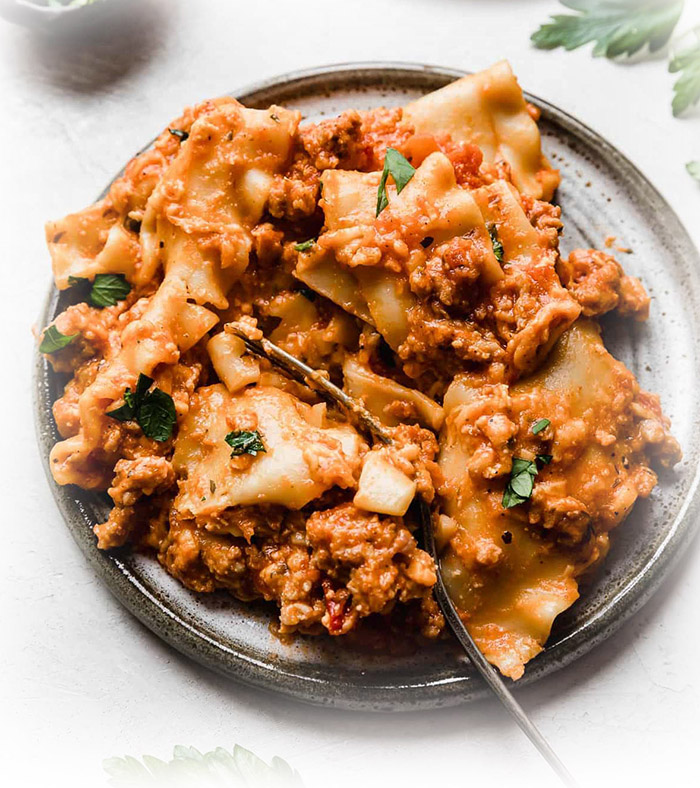

Deliciously Easy and Stress-Free
Made with an Italian sausage marinara sauce, herbed ricotta, and shredded cheese, this Slow Cooker Lasagna recipe is a winner in taste and time saving!
You'll never wanna eat frozen lasagna again after you see just how easy it is to make it yourself, in a Crockpot (Slow Cooker).
Just like the Italian's, you'll cook it slow & low, developing those rich and juicy flavors. Your family won't be able to stop eating!
- Italian Sausage (2lbs.)
- Garlic Cloves (4; minced)
- Marinara Sauce (2qty - 24oz jars)
- Italian Seasoning
- Salt & Pepper
- Ricotta Cheese (15oz.)
- Mozzarella Cheese (18oz.; shredded)
- Parmesan Cheese (1.5 cups; shredded)
- Romano Cheese (2oz.; shredded)
- Lasagna Noodles uncooked (15-18)
- Parsley (1/3 cup; fresh)
- Water (1 cup)
- In a pot over medium heat, cook the sausage until brown, breaking it into small crumbly pieces as it's cooking. Towards the last minute or two of browning add the minced garlic. Remove from heat. Drain the sausage of any liquid or grease that may have accumulated.
- Add the 2 jars of marinara and the 1 cup of water to the sausage bowl. Stir in the 1 tablespoon Italian seasoning. Taste, and season with salt and pepper. This will be referred to as "the sauce." Set aside.
- In a small bowl combine the ricotta, parsley, and Italian seasoning. Set aside.
- Coat the inside and the sides of a large crock pot with nonstick cooking spray. Begin layering starting with the sauce. Being sure to add about 2 cups of the sauce to the bottom of the crockpot. Then top the sauce with noodles. Breaking the noodles if they don't fit, so that it covers all of the sauce.
- Add a thin layer of ricotta atop the lasagna noodles. Generously sprinkle the shredded cheeses overtop the ricotta. Repeat these layers until all ingredients are used and it fills your crock pot. (Sauce, noodles, ricotta, cheeses, sauce noodles, ricotta, cheeses etc.) Ending with the shredded cheeses at the top.
- Cook on high for 4 hours. Serve warm with a sprinkling of fresh parsley.
Recipe by Salt & Baker